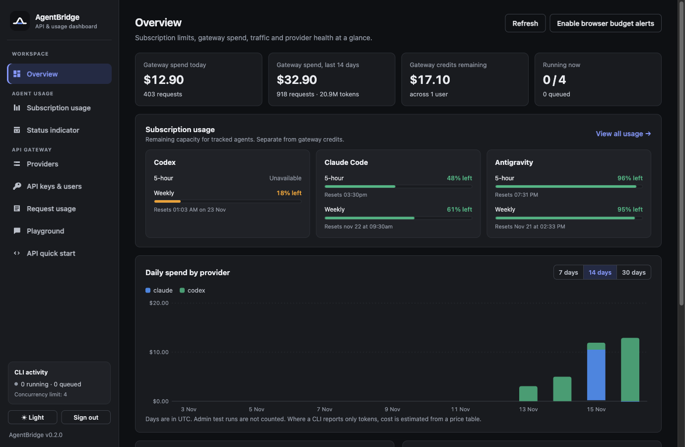

AgentBridge
AgentBridge brings three workflows together:
- Track subscription usage for supported coding agents (Claude Code, Codex, Antigravity and others): 5-hour and weekly limits and their reset times.
- Manage shared skills and instructions across Claude Code, Codex and Antigravity from one folder, with live validation, symlinking and marked instruction blocks.
- Expose agent CLIs as an API. A local gateway offers OpenAI-compatible (
/v1/chat/completions) and Anthropic-compatible (/v1/messages) endpoints on top of the CLIs you have configured.
Everything runs on your machine. The agentbridge command starts the gateway, opens a web dashboard and shows usage in the macOS menu bar or the Windows/Linux system tray.


Where to start
| I want to... | Go to |
|---|---|
| Install AgentBridge | Install |
| Get a first request working in a few minutes | Quick start |
| See my Claude or Codex limits in the menu bar | Status indicator |
| Share skills and global instructions across agents | Skills and instructions |
| Point my own code or tools at the gateway | API reference |
| Set spending limits for a key | Keys, users and budgets |
| Keep the gateway running all the time | Deployment |
| Fix something that isn't working | Troubleshooting |
How it works
your app / SDK ──HTTP──▶ AgentBridge gateway ──subprocess──▶ claude / codex / agy / gemini
(OpenAI or Anthropic 127.0.0.1:43187 (your existing CLI logins)
client library) │
├── web dashboard (usage, skills, instructions, providers, keys, playground)
└── menu bar / tray indicator (subscription usage)Each request runs the provider's CLI as a subprocess in a fresh temporary directory with a minimal environment. The gateway keeps a ledger of usage and charges it to the caller's credits.
Platforms
| Platform | Package | Indicator |
|---|---|---|
| macOS (Apple Silicon) | Prebuilt | Native menu bar item |
| Linux (x86-64, glibc, Ubuntu 22.04 or newer) | Prebuilt | System tray (X11 desktop) |
| Windows (x86-64) | Prebuilt | System tray |
Note
Release binaries are unsigned. Windows and Linux packages are built and smoke-tested in CI, but interactive tray and provider-login behaviour still needs more desktop testing.
Subscription logins are for personal use
Anthropic's terms restrict consumer-subscription OAuth tokens to Claude Code and Claude.ai. Check the terms of any other provider before using its subscription credentials through a gateway.
Roadmap
These are plans, not available features: multi-agent orchestration (a master agent that delegates to others) and an LLM router (choosing a model by task complexity).
License
AgentBridge is open source under the MIT license.